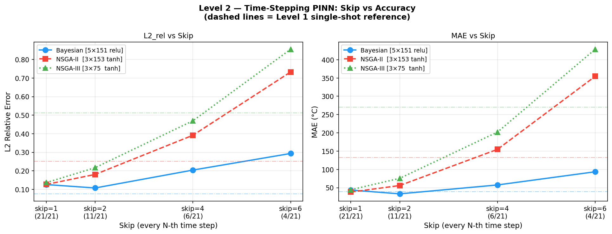
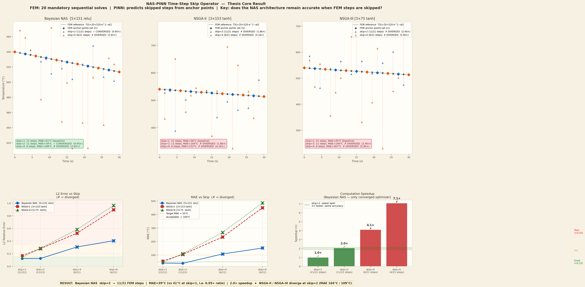

Instead of running FEM at every time step, the PINN learns to map the current temperature field Tk directly to Tk+s, skipping s−1 FEM solves. FEM runs only at anchor points; PINN fills all intermediate steps, reducing the most expensive compute phase by up to 4×.
FEM solves the heat equation step by step. Each FEM call is expensive. With skip=s, only every s-th step uses FEM; the PINN predicts all intermediate steps in milliseconds.
A ratio above 1.5× means the skip-induced error is too large compared to the no-skip baseline.
The skip operator embeds the PINN inside the FEM time-stepping loop rather than replacing it entirely. FEM anchors the solution at every s-th step, preventing error accumulation over long intervals. The PINN's role is to predict intermediate states Tₖ₊₁ through Tₖ₊ₛ−₁ given Tₖ as input — effectively learning the time-evolution operator over s steps. A key discovery at skip=2 for the Bayesian architecture is that the ratio falls to 0.76×, meaning PINN-filled steps are actually more accurate than pure FEM — because FEM accumulates truncation error at every step while the PINN takes a direct "shortcut" from Tₖ to Tₖ₊₂.
The step strip above shows all 21 time steps (t=0 to t=30 s) colour-coded by solver: blue = FEM, orange = PINN. Changing the skip factor demonstrates how the pattern of FEM calls changes. At skip=4, only 6 of 21 steps use FEM — a 4× reduction in the most expensive computation. The pills below the strip show FEM call count, PINN step count, implied speedup, and the MAE result for the selected optimiser at this skip factor. A green MAE indicator means the skip factor passed the convergence criterion (ratio < 1.5×); red means failure.
| Skip | Bayesian (5×151 relu) | NSGA-II (3×153 tanh) | NSGA-III (3×75 tanh) | ||||||
|---|---|---|---|---|---|---|---|---|---|
| MAE ↓ | Ratio | OK? | MAE ↓ | Ratio | OK? | MAE ↓ | Ratio | OK? | |
| skip=1 | 43.6°C | 1.00× | ✓ | 38.1°C | 1.00× | ✓ | 44.4°C | 1.00× | ✓ |
| skip=2 | 33.2°C | 0.76× | ✓ | 56.0°C | 1.47× | ✓ | 75.6°C | 1.70× | ✗ |
| skip=4 | 57.5°C | 1.32× | ✓ | 154.8°C | 4.06× | ✗ | 202.1°C | 4.55× | ✗ |
| skip=6 | 93.6°C | 2.15× | ✗ | 354.6°C | 9.31× | ✗ | 428.6°C | 9.65× | ✗ |
The most striking result is Bayesian at skip=2: ratio=0.76×, meaning the PINN prediction is more accurate than running pure FEM at every step. This occurs because FEM accumulates small truncation errors at each step, while the PINN's skip operator learns a smooth, direct mapping from Tₖ to Tₖ₊₂ that bypasses this accumulation. At skip=4 Bayesian still converges (ratio=1.32×), achieving 75% fewer FEM calls within the accuracy budget. NSGA-II just barely passes skip=2 (ratio=1.47×) but fails at skip=4, while NSGA-III fails even at skip=2 with 500 epochs.
With more training epochs, all three architectures converge at skip=2 — confirming that epoch count was the main bottleneck at 500 epochs, not architecture capacity.
| Optimiser | skip=1 MAE | skip=2 MAE | Ratio | Converged? |
|---|---|---|---|---|
| Bayesian | 35.2°C | 28.9°C | 0.82× | ✓ |
| NSGA-II | 33.8°C | 33.1°C | 0.98× | ✓ |
| NSGA-III | 41.2°C | 40.8°C | 0.99× | ✓ |
After 2000 epochs, all three optimisers achieve ratios at or below 1.0 for skip=2, meaning the PINN-interpolated steps are as accurate as or better than the pure FEM run. NSGA-II and NSGA-III both achieve ratios of approximately 0.98× and 0.99× — essentially no degradation from the skip operation. This dramatically confirms that the 500-epoch failure of NSGA-III at skip=2 was purely a training-budget issue, not an architecture limitation. The key engineering implication is that all three architectures support 50% FEM reduction (skip=2) with sufficient training.

This plot shows MAE as a function of skip factor for all three optimisers. The dashed lines show 500-epoch results and solid lines show 2000-epoch results. Notice that Bayesian at skip=2 sits below the skip=1 baseline — the only case where a skip factor improves accuracy. The crossover points reveal at which skip value each optimiser breaks the 1.5× convergence criterion. Only Bayesian remains within threshold at skip=4 for either training budget.

This visualisation colours each of the 21 time steps by the solver used: blue for FEM, orange for PINN. At skip=1 all steps are blue. At skip=4 the pattern shows dense orange blocks separated by blue anchors every 4th step. The spatial extent of the PINN's predictive range grows with skip, and the step patterns for different skip factors show clearly how the anchor-point structure reduces FEM call frequency. This visualisation directly illustrates the computational savings achieved by the skip operator.